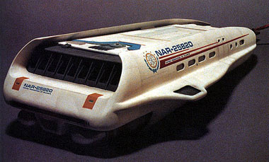
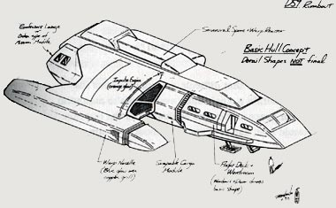
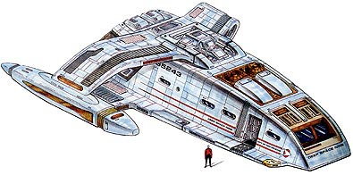
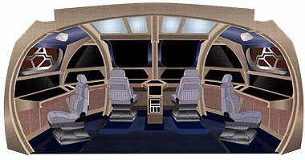
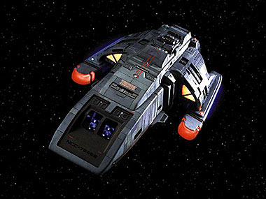
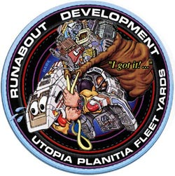
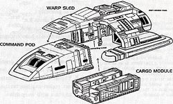
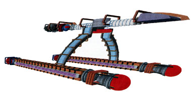
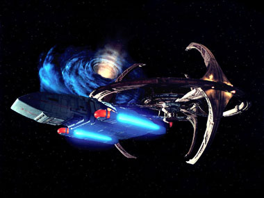

|


Tudo sobre a estação espacial Deep Space Nine e toda a
tecnologia que permeia o século 24 você aprende por aqui.
|

|
||
|
Vários
ângulos da nave
|
||
|
O
Runabout em corte
|
||
|
Módulos
de carga
|
||
|
Cockpit
de comando
Cortesia do Ex-Astris-Scientia |
||
|
Runabout
utilizando
sensor superior extra |
||
{kind=link}
|
Runabouts
No
primeiro episódio de Deep Space Nine, "Emissary",
a estação espacial comandada por Benjamin Sisko recebeu três pequenas
naves chamadas de runabouts. Da classe Danube, os runabouts não
são apenas "grande naves auxiliares" como muitos acreditam. Na
verdade, são pequenas naves multi-função com um motor de mesma
eficiência que uma nave estelar de grande porte e atributos comparáveis
a outras classes de naves mais tradicionais no cenário de Jornada
nas Estrelas, embora de acordo com a "Bíblia dos Escritores
de DS9", um runabout alcance apenas dobra 4.7.
 Sternbach, antes do desenho definitivo, criou alguns esboços, como os dois que podem ser vistos abaixo. Repare no desenho mais elaborado que o designer tinha em mente inicialmente uma nave um pouco maior do que a versão final que pode ser vista nos episódios.    Durante a pré-produção de DS9, ficou decidido que as novas naves teriam nomes de rios de planetas que não fossem a Terra. Porém, Michael Piller percebeu que os telespectadores nunca conseguiriam descobrir que o nome das naves seriam de rios alienígenas e não de qualquer outra coisa que exista fora da Terra. Os roteiristas então teriam de colocar uma linha de diálogo explicando o motivo de tal runabout levar determinado nome, isso em todo episódio em que houvesse alguma dessas naves. Como provavelmente essa linha de diálogo seria cortada da versão final sempre que necessário, para não estourar o tempo do episódio, Piller decidiu que os runabouts de DS9 teriam sim o nome de rios. Mas rios terráqueos. Assim, nos primeiros episódios da série, fomos apresentados ao USS Rio Grande, USS Yangtzee Kiang e USS Ganges.  Um
fator importante que acaba de uma vez com toda com a possibilidade
de confusão entre um runabout e uma nave auxiliar comum (shuttle)
é que eles têm um número de registro exclusivo, como as
grandes naves estelares. A USS Rio Grande, por exemplo, é a NCC
72452, USS Yangtzee Kiang, NCC 72453 e a USS Ganges, NCC 72454.
Durante a série, várias naves foram destruídas ou perdidas, e
sempre a Frota Estelar mandava algum outra como reposição. Dessa
forma temos a USS Mekong, USS Orinoco, USS Rubicon, USS Volga,
USS Yukon, USS Shenandoah, USS Gander e até em A Nova Geração
fomos apresentados a um runabout em "Timescape", episódio
do 6º ano. De acordo com o pessoal do departamento de arte de
DS9, a USS Rio Grande foi o runabout que teve a mais longa
vida dentro da série, estreando no episódio-piloto (foi
com ela que Sisko e Dax descobriram a fenda espacial) e sobrevivendo
durante os sete anos em que DS9 esteve no ar. 
Foi em 2365 (durante o 2º ano de A Nova Geração)
que o protótipo dos runabouts de DS9, USS Danube NX 72003,
começou a ser construído nos estaleiros de Utopia Planitia, em
Marte. Seus primeiros testes ocorreram em 2368. Para a
Frota Estelar, os motivos que levaram a elaboração e construção
dessa nova classe de naves eram que elas poderiam ter uma maior
habilidade em realizar respostas rápidas em transportes de explorações
científicas, e ainda poderiam permanecer em órbita ou pousar na
superfície servindo como base de operações temporária para as
missões, além de poder mover módulos de carga de um local ao outro.
A Frota resolveu deixar três dessas naves na estação
espacial DS9 em 2369, pois assim Sisko poderia contar
com pequenas naves com capacidade de dobra que deixariam as portas
de atracação da estação livres, já
que eram "guardadas" no interior da estação
através de um sistema de elevadores.  
Além de seis bancos phaser, dois nas naceles, dois na parte da
frente da nave e dois na parte de trás, os runabouts não carregavam
nenhum outro armamento. Porém, nos últimos tempos, as naves foram
equipadas com dois tubos de disparo para micro-torpedos. Tripulação:
2 pessoas (comporta mais 4 passageiros); Autonomia:
3 meses;  |